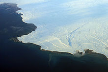

CAUSAS: Las causas del calentamiento global, también llamados forzamientos externos, son los mecanismos dominantes externos al sistema climático —pero no necesariamente externos a la Tierra— que causan el calentamiento global observado en el registro de temperaturas. Las investigaciones se han centrado en las causas del calentamiento observado desde 1979, período en el que la actividad humana ha tenido un crecimiento más rápido y se han podido realizar mediciones satelitales sobre la alta atmósfera. Las principales causas antropogénicas del calentamiento global son el incremento de las concentraciones atmosféricas de gases de efecto invernadero, los cambios globales en el paisaje y el uso de tierras (como la deforestación) y el incremento de las concentraciones atmosféricas de aerosoles y hollín. Las principales causas no antropogénicas son las variaciones en la luminosidad solar, las erupciones volcánicas y las variaciones orbitales de la Tierra alrededor del Sol. La «detección» es el proceso de demostrar que el clima ha cambiado en cierto sentido estadístico definido, sin proporcionar una razón para ese cambio. La detección no implica la atribución del cambio detectado a una causa particular. La «atribución» de las causas del cambio climático es el proceso de establecer las causas más probables para el cambio detectado con un cierto nivel de confianza definido. La detección y atribución también se pueden aplicar a cambios observados en los sistemas físicos, ecológicos y sociales.
RETROALIMENTACIÓN
La retroalimentación del cambio climático es el proceso de retroalimentación (feedback) por el cual un cambio en el clima puede facilitar o dificultar cambios ulteriores. El sistema climático incluye una serie de retroalimentaciones que alteran la respuesta del sistema a los cambios en los forzamientos externos. Las retroalimentaciones positivas incrementan la respuesta del sistema climático a un forzamiento inicial, mientras que las retroalimentaciones negativas la reducen. Los dos fenómenos se pueden dar a la vez y del balance general saldrá algún tipo de cambio más o menos brusco e impredecible a largo plazo, ya que el sistema climático es un sistema caótico y complejo. Existe una serie de retroalimentaciones en el sistema climático, incluido el vapor de agua, los cambios en el hielo y su efecto albedo (la capa de nieve y hielo afecta la cantidad que la superficie de la Tierra absorbe o refleja la luz solar entrante), las nubes y los cambios en el ciclo del carbono de la Tierra (por ejemplo, la liberación de carbono del suelo). La principal retroalimentación negativa es la energía que la superficie de la Tierra irradia hacia el espacio en forma de radiación infrarroja. De acuerdo con la ley de Stefan-Boltzmann, si la temperatura absoluta (medida en kelvin) se duplica, la energía radiativa aumenta por un factor de 16 (2 a la cuarta potencia). Las retroalimentaciones son un factor importante en la determinación de la sensibilidad del sistema climático a un aumento de las concentraciones atmosféricas de GEI. Si lo demás se mantiene, una sensibilidad climática superior significa que se producirá un mayor calentamiento para un mismo incremento en el forzamiento de gas de efecto invernadero.